7210B45 R.R. REAR WING FRAME
- Path
- Procedures > 72 PANELS AND FRAME > 7210 REMOVING REFITTING > 7210B structure elements-central and rear part > 7210B45 R.R. REAR WING FRAME
- Kind
- repair procedure (removal / refitting; the operation number is the code)
- Applies to
- all engines; all production periods
- Interactive page
- https://sloeber94.github.io/elrnDB-a156/en/#/3239036
Applies to: all engines; all production periods
 Removing
Removing
 Refitting
RefittingCheck if any of the connected parts are deformed by checking body alignment dimensions. Use appropriate measurement tools (reference rigs, templates or gauges).
Straighten the body if necessary.
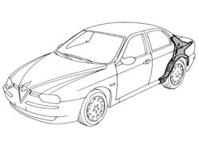
Applies to: all engines; all production periods
1. Use a pneumatic saw to cut along the lines shown in the figure.
2. Use a circular saw to cut along the lines shown in the figure.
3. Cross-sections of key areas as a guide to allow the operator to adjust cutting position and depth in order to avoid damage to the underlying panels.
4. Remove the spot welds shown in the figure using a chamfering machine.
5. Use a drill to crop the spot welds shown in the figure.
6. Remove the rear wing frame from the car.
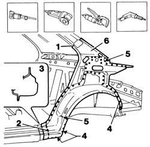
Applies to: all engines; all production periods
Straighten the panel edges using a mallet and profiled stake.
Use a grinding wheel to remove the weld spot residues.
1. Apply electric weld paint finish to the newly-treated panel edges.
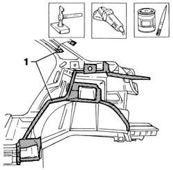
Applies to: all engines; all production periods
1. Cut the wing frame at the bench. Take care to leave a sufficiently wide section of steel to attach the new part to.
2. Make equidistant holes as shown in the figure.
3. Use a rotary brush to remove the corrosion-proofing from around the inner and outer edge.
Apply electroweldable paint finish to the edges in contact with the car.
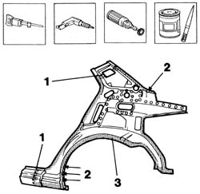
Applies to: all engines; all production periods
Refitting
Removing1. Position the rear wing frame correctly on the car and secure using self-locking grippers.
Check it is properly aligned.
2. Use a circular saw to trim the panel and remove excess parts.
3. Use a pneumatic saw to trim the panels and remove excess parts.
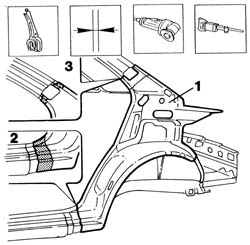
Applies to: all engines; all production periods
1. Use a spot welder to weld the areas shown in the figure.
2. Use a MIG welder to seam weld the panel edges trimmed previously.
3. Use a MIG welder to fill the holes shown in the figure.
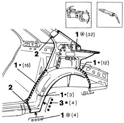
Applies to: all engines; all production periods
1. Correct any deformations in the panel using a profiled stake and mallet.
Use a grinding wheel to level weld residues and remove.
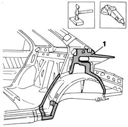
Applies to: all engines; all production periods
1. Apply rust-proofing to newly welded areas.
2. Seal the rear wing frame joint lines.
3. Apply foam as shown in the figure.
Apply paint.
4. Apply wax oil inside the rear wing frame.
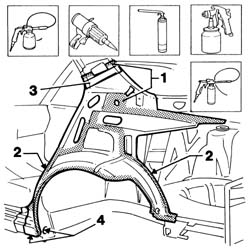
Applies to: all engines; all production periods
Applies to: all engines; all production periods; only with equipment: Station Wagon
Removing
Refitting7210B70 R.R. REAR TRIM (structural element)
Keep the tailgate raised.
Check if any of the connected parts are deformed by checking body alignment dimensions. Use appropriate measurement tools (reference rigs, templates or gauges).
Straighten the body if necessary.
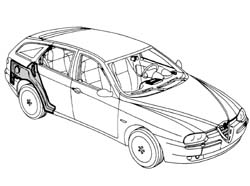
Applies to: all engines; all production periods; only with equipment: Station Wagon
1. Using a power saw, cut along the outer edge of the framework-wheelarch.
2. Remove the framework.
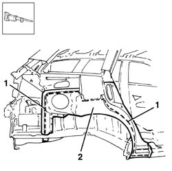
Applies to: all engines; all production periods; only with equipment: Station Wagon
1. Reduce the weld spots on the edges of the framework.
2. Using a power saw, make the cut near the door sill.
3. Remove the excess from the panel.
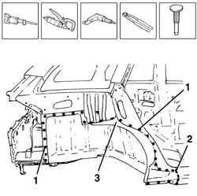
Applies to: all engines; all production periods; only with equipment: Station Wagon
1. Use a grinding wheel to remove the weld spot residues.
2. Straighten the edges of the panel.
3. Use a rotary brush to clean treated areas.
Apply electroweldable paint in the welding areas.
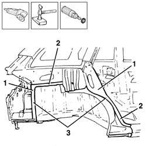
Applies to: all engines; all production periods; only with equipment: Station Wagon
1. Use a rotary brush to remove the rust-proofing around the edge of the part.
Apply electroweldable paint finish to the affected parts.
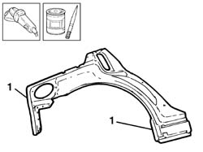
Applies to: all engines; all production periods; only with equipment: Station Wagon
Refitting
Removing1. Correctly position the replacement part on the bodyshell, align it and secure it using self-locking clamps.
2. Use a spot welder to weld the framework on the areas shown in the figure.
3. Use a MIG welder to weld the framework in the areas shown in the figure.
Check that the welded parts are positioned correctly.
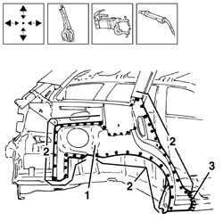
Applies to: all engines; all production periods; only with equipment: Station Wagon
1. Use a rotary brush to dress down the spot welds and clean the areas concerned.
2. Apply rust-proofing to the newly welded areas.
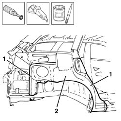
Applies to: all engines; all production periods; only with equipment: Station Wagon